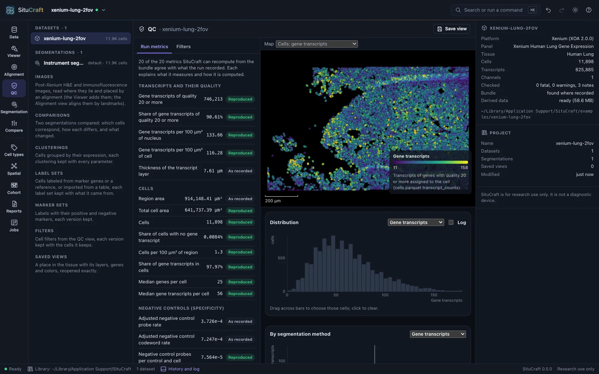
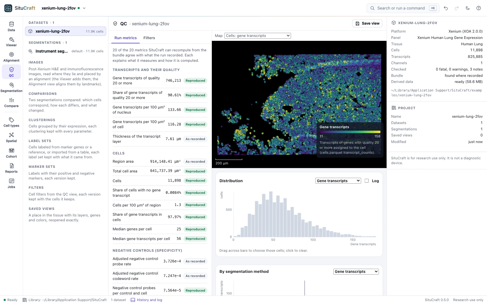
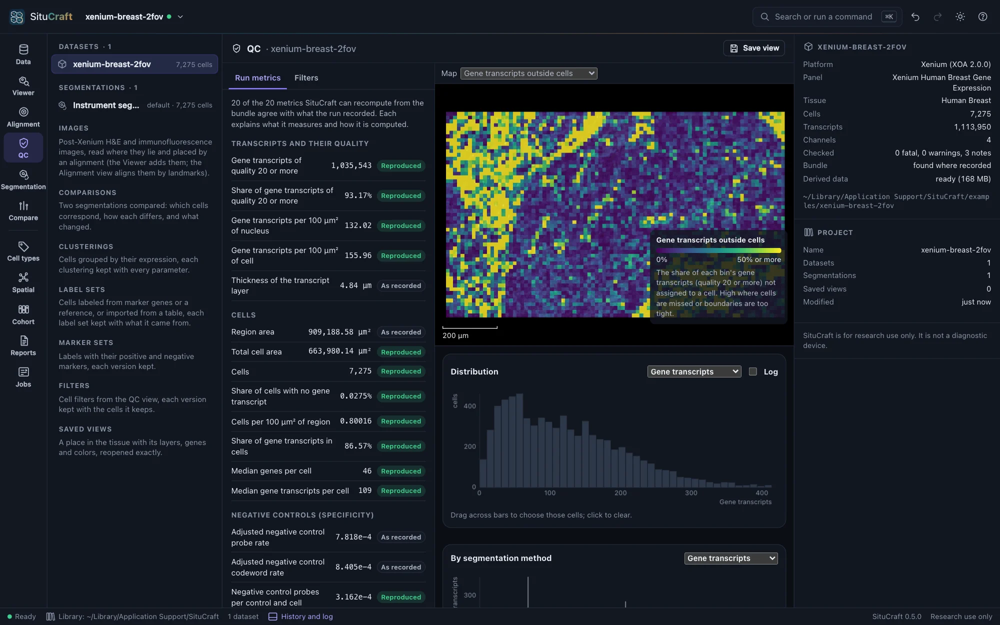
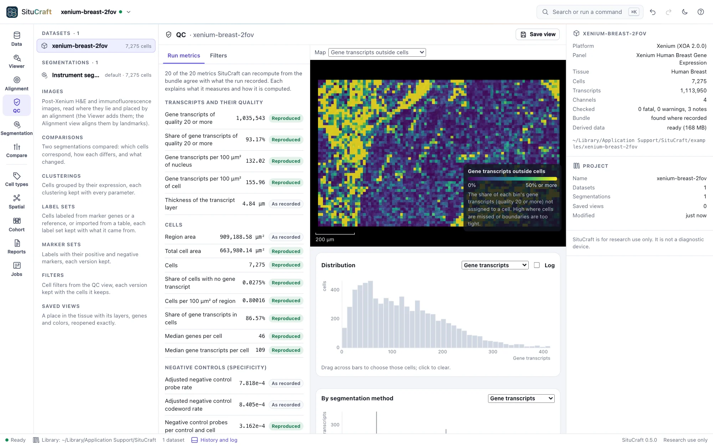
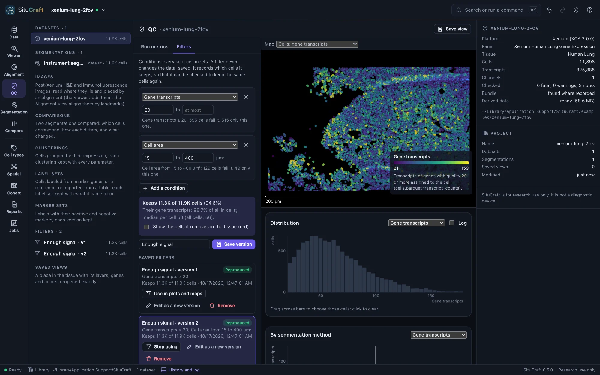
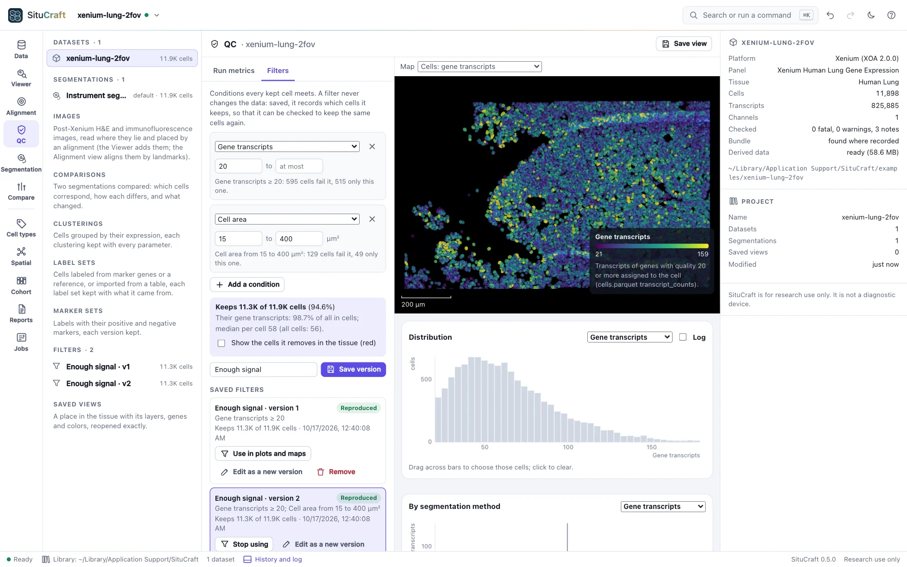

Quality control
The QC view says whether the run supports analysis, and where: its metrics explained and recomputed from the data, maps over the tissue, plots whose cells light up in it, and filters that never change the data.
The QC view


- Run metrics: every metric the run recorded, explained, with SituCraft's own value beside the recorded one where it can be recomputed (Reproduced), or why not.
- Maps over the tissue: cells colored by an attribute (gene transcripts, genes detected, area, negative controls, segmentation method and more), or small regions colored by the share of transcripts outside cells, the share below quality 20, or negative-control density.
- Plots: a histogram, box plots by segmentation method, and a scatter plot. Drag across a plot to choose cells; they light up in the tissue (here and in the Viewer) and the inspector compares them with all cells.
- Filters: conditions on cells (for example, gene transcripts at least 20 and area 15 to 400 µm²), each condition's effect counted as you edit it. Save version keeps the filter as a numbered version in the project, with the count and a checksum of the cells it keeps; it is checked to keep the same cells whenever the project reopens (Reproduced). Filters never change the data.




Save view in the QC view keeps the map, the filter in use and the place.